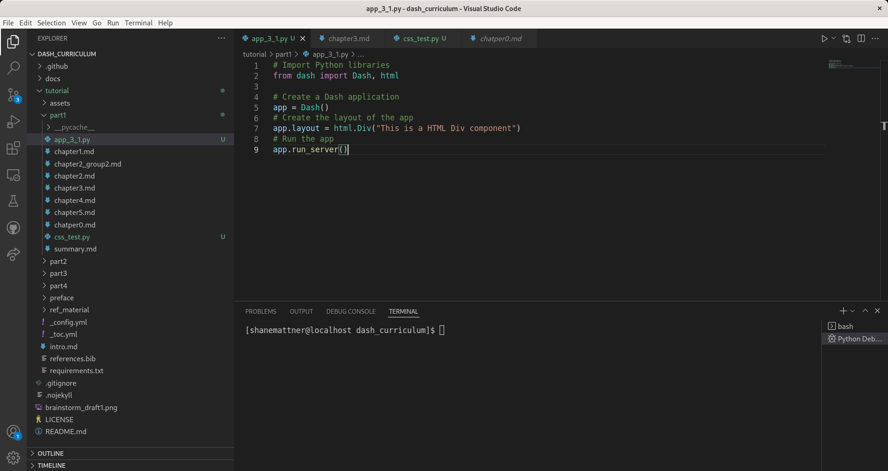
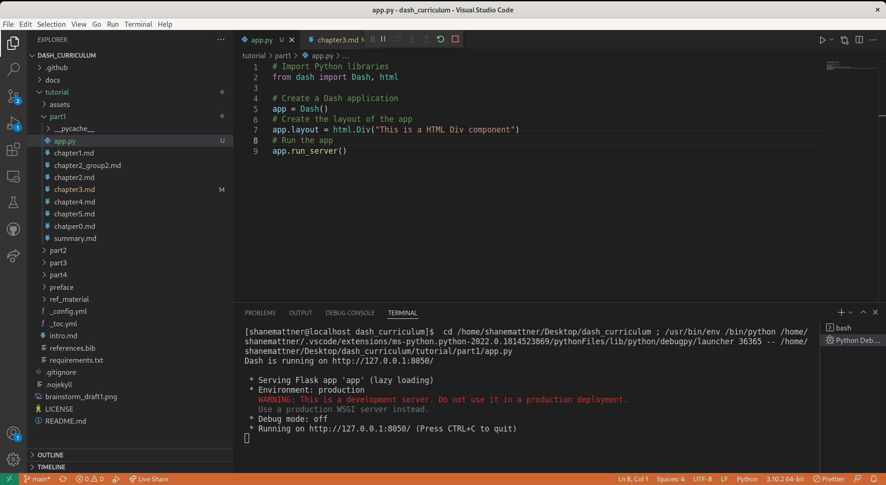
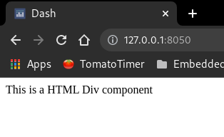
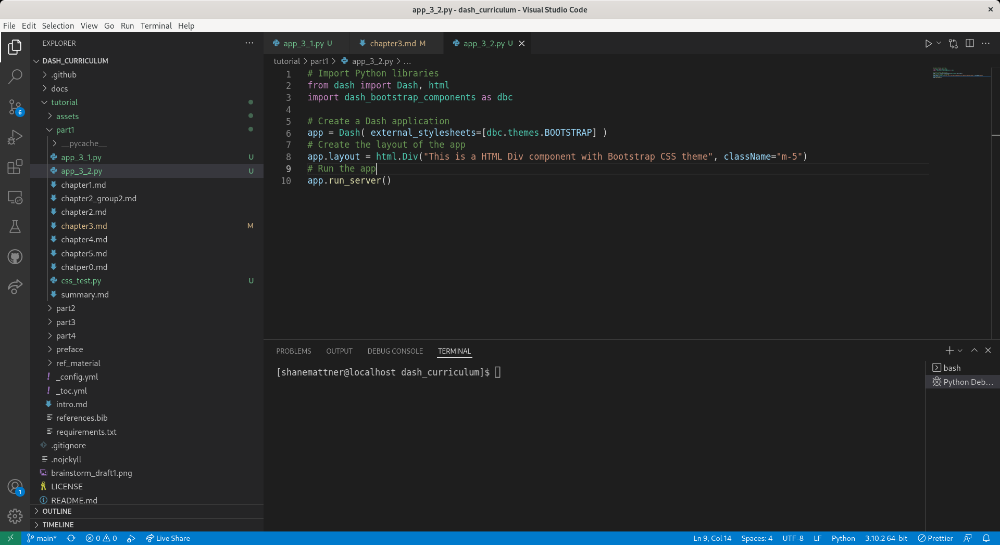
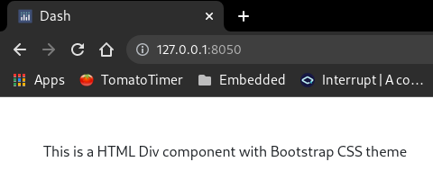
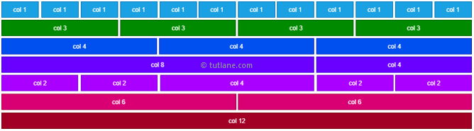
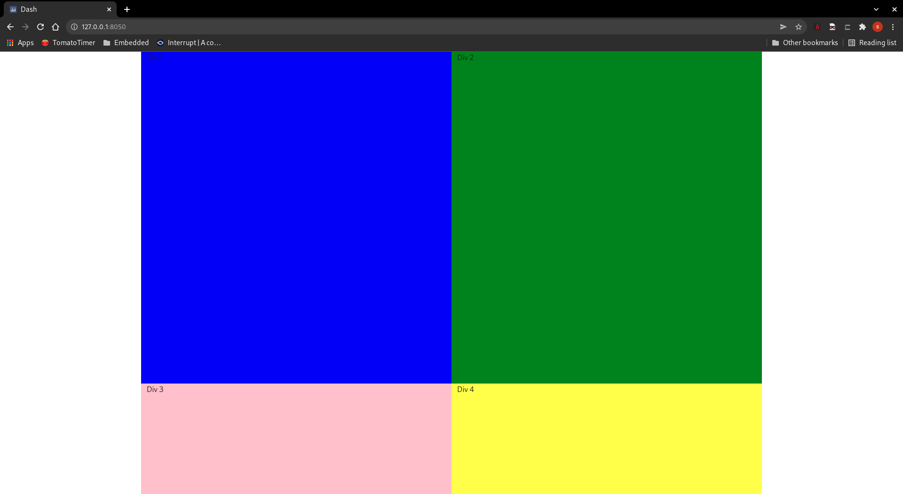

Chapter 3 - Dash Components and Layouts
Contents
Chapter 3 - Dash Components and Layouts¶
Overview¶
In this chapter we explore Dash layouts and the components that make up the layout.
Dash Layout¶
Dash applications are comprised of 2 parts:
Layout: What the application looks like
Callabacks: Interactivity of the application
The layout is made up of components. Let’s make a minimal Dash application to demonstrate this concept:
Minimal Dash App
Create app_3_1.py in the tutorial/part1 directory:

Copy/paste the minimal Dash app code:
# Import Python libraries
from dash import Dash, html
# Create a Dash application
app = Dash()
# Create the layout of the app
app.layout = html.Div("This is a HTML Div component")
# Run the app
app.run_server()
Now Run/Debug the code: 
Open a web browser, enter http://127.0.0.1:8050/ in the address bar, and you should see our minimal application: 
Next, we’ll add some styling with CSS. We’ll use a stylesheet from the Bootstrap library.
CSS
Create app_3_2.py in the tutorial/part1 directory:

Copy/paste the minimal Dash + CSS app code:
# Import Python libraries
from dash import Dash, html
import dash_bootstrap_components as dbc
# Create a Dash application, pass in a stylesheet from Bootstrap
app = Dash( external_stylesheets=[dbc.themes.BOOTSTRAP] )
# Create the layout of the app
app.layout = html.Div("This is a HTML Div component with Bootstrap CSS theme", className="m-5")
# Run the app
app.run_server()
Run the code, open a web browser, enter http://127.0.0.1:8050/ in the address bar, and you should see our minimal application with a slightly different style this time:
 vs
Let’s continue to learn about Bootstrap, the most popular CSS Framework for developing responsive and mobile-first websites. We will be using the Dash Bootstrap Components library that makes it easier to build consistently styled apps with complex, responsive layouts
Dash Bootstrap Components
Layout in Bootstrap
Layout in Bootstrap is controlled using the grid system. The Bootstrap grid has twelve columns 
3 main layout components: Container, Row, and Column.
Container wraps the entire app
Rows only contain columns
Columns holds your components
Now let’s add to our minimal, CSS styled app by using a Container, Rows, and Columns. Create a new file called app_3_3.py and copy/paste the following code:
# Import Python libraries
from dash import Dash, html
import dash_bootstrap_components as dbc
# Create a Dash application, pass in a stylesheet from Bootstrap
app = Dash( external_stylesheets=[dbc.themes.BOOTSTRAP] )
# Create the layout of the app
app.layout = dbc.Container([
# Row 1
dbc.Row([
dbc.Col([
html.Div("Div 1")
],
style={"background-color": "blue"},
),
dbc.Col([
html.Div("Div 2")
]),
],
style={"background-color": "green"},
className="h-75",
),
# Row 2
dbc.Row([
dbc.Col([
html.Div("Div 3")
],
style={"background-color": "pink"},
),
dbc.Col([
html.Div("Div 4")
]),
],
style={"background-color": "yellow"},
className="h-25",
),
],
style={"height": "100vh"},
)
# Run the app
app.run_server()
Notice that a container which holds our app then we have 2 rows which hold 2 columns each, and each column containers a Div. We added some CSS styling to change each column’s background-color. The Rows also include some CSS styling to show how we can change the height of the Row. Finally, we added CSS styling to make sure the Container expands to 100% of the height of the browser.
